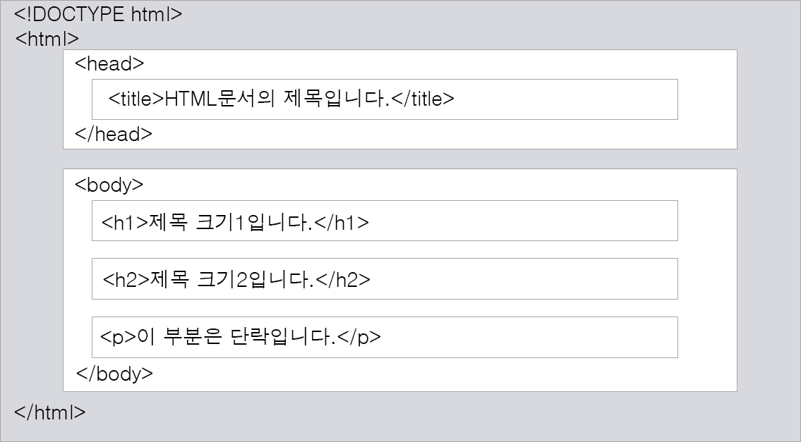
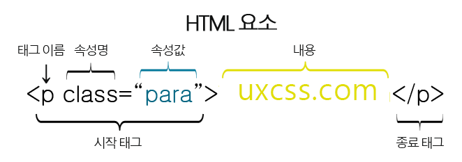

HTML 기초
HTML 기본 구조

<!DOCTYPE html>
<html lang="ko">
<head>
<meta charset="UTF-8">
<meta name="viewport" content="width=device-width, initial-scale=1.0">
<meta http-equiv="X-UA-Compatible" content="ie=edge">
<title>html5 기본구조</title>
</head>
<body>
<header>
<h1><a href="#">로고</a></h1>
<nav>
<a href="#">메뉴1</a>
<a href="#">메뉴2</a>
<a href="#">메뉴3</a>
<a href="#">메뉴4</a>
</nav>
</header>
<main>
<section>
<h2>공지사항</h2>
<article>
</article>
</section>
<section>
<h2>자주하는 질문</h2>
<article>
</article>
</section>
<aside>
<h2>기타</h2>
<aritcle>
</aritcle>
</aside>
</main>
<footer>
<address>주소정보</address>
</footer>
</body>
</html>
<!DOCTYPE html> : 현재 문서가 HTML5 문서임을 명시합니다.
<html> : HTML 문서의 루트(root) 요소를 정의합니다.
<head> : HTML 문서의 메타데이터(metadata)를 정의합니다.
- 메타데이터(metadata)란 HTML 문서에 대한 정보(data)로 웹 브라우저에는 직접적으로 표현되지 않는 정보를 의미합니다.
- 이러한 메타데이터는 <title>, <style>, <meta>, <link>, <script>, <base>태그 등을 이용하여 표현할 수 있습니다.
<title> : HTML 문서의 제목(title)을 정의하며, 다음과 같은 용도로 사용됩니다.
- 웹 브라우저의 툴바(toolbar)에 표시됩니다.
- 웹 브라우저의 즐겨찾기(favorites)에 추가할 때 즐겨찾기의 제목이 됩니다.
- 검색 엔진의 결과 페이지에 제목으로 표시됩니다.
<body> : 웹 브라우저를 통해 보이는 내용(content) 부분입니다.
<h1> ~ <h6> : 제목(heading)을 나타냅니다.
<p> : 단락(paragraph)을 나타냅니다.
블록과 인라인
HTML 요소의 타입
HTML의 모든 요소는 해당 요소가 웹 브라우저에 어떻게 보이는가를 결정짓는 display 속성을 가집니다.
대부분의 HTML 요소는 이러한 display 속성값으로 다음 두 가지 값 중 하나를 가지게 됩니다.
1. 블록(block)
2. 인라인(inline)
블록(block) 타입의 요소
display 속성값이 블록(block)인 요소는 언제나 새로운 라인(line)에서 시작하며, 해당 라인의 모든 너비를 차지합니다.
- 문법
-
<p style="border: 3px solid red">
p요소는 display 속성값이 기본이 블록인 요소입니다.
</p>
<div>요소
<div>요소는 다른 HTML 요소들을 하나로 묶는 데 자주 사용되는 대표적인 블록(block) 요소입니다.
<div>요소는 주로 여러 요소들의 스타일을 한 번에 적용하기 위해 사용됩니다.
<div>,<p>,<hx>,<ul>,<ol>,<li>,<dl>,<dt>,<dd>,<header>,<section>,<article>,<nav>,<footer>,<address>,<form>요소는 display 속성값이 블록(block)인 대표적인 요소입니다.
인라인(inline) 타입의 요소
display 속성값이 인라인(inline)인 요소는 새로운 라인(line)에서 시작하지 않습니다.
또한, 요소의 너비도 해당 라인 전체가 아닌 해당 HTML 요소의 내용(content)만큼만 차지합니다.
그리고 인라인 요소 안에 블럭 요소가 들어 올 수 없습니다.
<span>, <a>, <img>, <strong>, <b>, <em>, <i>, <ins>, <del>요소는 display 속성값이 인라인(inline)인 대표적인 요소입니다.
- 문법
-
<p>
<span style="background-color:grey; color:orange">span태그</span>는 display 속성값이 기본이 인라인인 요소입니다.
</p>
<span>요소
<span>요소는 텍스트(text)의 특정 부분을 묶는 데 자주 사용되는 인라인(inline) 요소입니다.
<span>요소는 주로 텍스트의 특정 부분에 따로 스타일을 적용하기 위해 사용됩니다.
기본 레이아웃
HTML 레이아웃(Layout)
레이아웃(layout)이란 특정 공간에 여러 구성 요소를 보기 좋게 효과적으로 배치하는 작업을 의미합니다.
웹 페이지의 레이아웃은 웹 사이트의 외관을 결정짓는 매우 중요한 요소입니다.
div 요소를 이용한 레이아웃
div 요소는 CSS 스타일을 손쉽게 적용할 수 있으므로, 레이아웃을 작성하는데 자주 사용됩니다.
- 문법
-
<div class="header"></div>
<div class="nav"></div>
<div class="container">
<div class="main">
<div class="article"></div>
<div class="article"></div>
</div>
<div class="group">
<div class="section">
<div class="article"></div>
</div>
<div class="aside">
<div class="figure">
<div class="imgbox"></div>
<div class="figcaption"></div>
</div>
</div>
</div>
</div>
<div>footer</div>
HTML5 레이아웃
HTML5에서는 웹 페이지의 레이아웃만을 위한 별도의 새로운 요소들을 제공합니다.
이러한 요소들을 의미(semantic) 요소라고 합니다.

<header class="header"></header>
<nav class="nav"></nav>
<main class="container">
<main class="main">
<article class="article"></article>
<article class="article"></article>
</main>
<section class="section">
<article class="article"></article>
</section>
<aside class="aside">
<figure>
<img src="이미지 주소" alt="이미지 정보">
<figcaption class="figcaption"></figcaption>
</figure>
</aside>
</main>
<footer class="footer"></footer>
HTML5에서 제공하는 레이아웃만을 위한 의미(semantic) 요소는 다음과 같습니다.
HTML5 요소
| <header> |
HTML 문서나 섹션(section) 부분에 대한 헤더(header)를 정의함. |
| <nav> |
HTML 문서의 탐색 링크를 정의함. |
| <section> |
HTML 문서에서 섹션(section) 부분을 정의함. |
| <article> |
HTML 문서에서 독립적인 하나의 글(article) 부분을 정의함. |
| <aside> |
HTML 문서에서 페이지 부분 이외의 콘텐츠(content)를 정의함. |
| <footer> |
HTML 문서나 섹션(section) 부분에 대한 푸터(footer)를 정의함. |
HTML 요소 구조
HTML 요소(element)는 여러 속성을 가질 수 있으며, 이러한 속성(attribute)은 해당 요소에 대한 추가적인 정보를 제공합니다.
또한, HTML 요소는 시작 태그로 시작해서 종료 태그로 끝납니다.

<p class="para">uxcss.com</p>
속성은 HTML 요소 중에서도 언제나 시작 태그 내에서만 정의되며, 속성 이름과 속성값(value)으로 표현됩니다.
- 문법
-
<태그이름 속성이름="속성값"></태그이름>
속성 이름은 언제나 소문자로 작성하자!
HTML5 표준에서는 속성 이름에 대소문자를 구분하지 않고 있습니다.
하지만 W3C에서는 속성 이름을 사용할 때 될 수 있으면 소문자로 작성하도록 권장하고 있습니다.
또한, XHTML에서는 속성 이름을 더욱 엄격하게 소문자로만 사용해야 합니다.
속성값은 언제나 따옴표로 감싸자!
HTML 텍스트 요소 - 제목
제목(Heading)
HTML은 제목을 표현할 수 있는 다양한 크기의 태그를 제공합니다.
가장 큰 <h1>태그부터 가장 작은 <h6>태그까지 다양한 크기로 제목을 표현할 수 있습니다.
- 문법
-
<h1>제목1의 크기입니다!</h1>
<h2>제목2의 크기입니다!</h2>
<h3>제목3의 크기입니다!</h3>
<h4>제목4의 크기입니다!</h4>
<h5>제목5의 크기입니다!</h5>
<h6>제목6의 크기입니다!</h6>
이런 <hx>태그는 제목의 표현이라는 기능 외에도 또 다른 중요한 역할을 하고 있습니다.
여러 검색엔진은 각 웹 사이트의 내용을 바로 이 <hx>태그를 이용하여 키워드를 수집하고, 그 내용을 파악합니다.
따라서 HTML 문서에 포함되는 제목은 <hx>태그로 작성해야만 검색엔진에 의해 제대로 검색될 확률을 높일 수 있습니다.
종료 태그를 잊지 맙시다!
대부분의 웹 브라우저는 종료 태그를 사용하지 않더라도 다음 예제와 같이 HTML 문서를 제대로 표현해 줍니다.
하지만 종료 태그가 없으면 예상치 못한 오류나 결과가 발생할 수도 있습니다.
또한, XHTML이나 XML과 같은 문법이 엄격한 언어에서는 종료 태그의 유무를 엄격하게 검사합니다.
HTML 텍스트 요소 - 단락(Paragraph)
단락(Paragraph)
단락이란 내용상 끊어서 구분할 수 있는 하나하나의 부분을 의미하며, 문단이라고도 부릅니다.
HTML에서는 <p>태그를 이용하여 이러한 단락을 표현합니다.
- 문법
-
<h1>제목1의 크기입니다!</h1>
<h2>제목2의 크기입니다!</h2>
<h3>제목3의 크기입니다!</h3>
<p>여기서부터 단락입니다.</p>
띄어쓰기와 줄 나누기
HTML 코드에서 띄어쓰기나 줄 나누기를 여러 번 하더라도 웹 브라우저를 통해 나타나는 화면에는 전혀 영향을 주지 못합니다.
웹 브라우저는 여러 번의 띄어쓰기나 줄 나누기를 오직 하나의 띄어쓰기나 줄로만 인식하기 때문입니다.
- 문법
-
<p>
줄을 나누고 싶어서
이렇게 줄을 나눠봤습니다.
과연 그대로 출력이 될까요?
</p>
- 문법
-
<p>
줄을 나누고 싶어서<br>
이렇게 줄을 나눠봤습니다.<br>
<br>
과연 그대로 출력이 될까요?
</p>
텍스트(text) 서식 미리 정의하기
HTML 코드에서 작성한 텍스트 서식을 그대로 표현하려면 <pre>태그를 사용해야 합니다.
<pre>태그(preformatted text) 내에 작성된 텍스트의 모든 띄어쓰기와 줄 나누기는 웹 브라우저에 그대로 표현됩니다.
수평 가로 구분선
단락을 나눌 때나 내용상의 구분을 표현하고자 할 때 수평 가로 구분선을 사용합니다.
이렇게 사용되는 수평 가로 구분선을 HTML 코드에서는 <hr>태그(horizontal rule)로 간단하게 만들 수 있습니다.
HTML 텍스트 요소 - 서식(Formatting)
서식(Formatting)
HTML은 텍스트(text)에 다양한 효과를 주는 여러 태그(tag)를 제공합니다.
HTML 문서에서 텍스트를 굵게 표현하고 싶을 때에는 <b>태그(bold text)나 <strong>태그를 사용하면 됩니다.
<b>태그는 단순히 화면의 텍스트를 굵게 표현해 줍니다. 하지만 <strong>태그는 텍스트를 굵게 표현해줄 뿐만 아니라 그 내용이 중요하다는 의미도 함께 포함해 줍니다.
- 문법
-
<p><b>"이 부분"</b>은 단순히 글씨가 굵은 부분이에요!</p>
<p><strong>"이 부분"</strong>은 중요한 부분이라서 굵게 표현됐어요!</p>
HTML 문서에서 이탤릭체를 표현하고 싶을 때에는 <i>태그(italic text)나 <em>태그(emphasized text)를 사용합니다.
<i>태그는 단순히 화면의 텍스트를 이탤릭체로 표현해 줍니다.
하지만 <em>태그는 텍스트를 이탤릭체로 변환해줄 뿐만 아니라 그 내용이 중요하다는 의미도 함께 포함해 줍니다.
검색엔진은 <strong>태그나 <em>태그를 사용하여 강조된 텍스트를 더 중요하게 인식합니다.
- 문법
-
<p><i>"이 부분"</i>은 단순히 글씨가 이탤릭체인 부분이에요!</p>
<p><em>"이 부분"</em>은 중요한 부분이라서 이탤릭체로 표현됐어요!</p>
하이라이팅 효과
<mark>태그는 텍스트에 하이라이팅(highlighting) 효과를 적용시켜 줍니다.
- 문법
-
<p><mark>"이 부분"</mark>만 하이라이팅하고 싶어요.</p>
삭제 효과
<del>태그(delete)는 텍스트 중앙에 가로줄을 만들어 마치 텍스트를 지운 것과 같은 효과를 내줍니다.
- 문법
-
<p><del>"이 부분"</del>을 지운 것처럼 하고 싶어요.</p>
삽입 효과
<ins>태그(insert)는 텍스트 밑에 가로줄을 만들어 마치 빈칸에 텍스트를 삽입한 것과 같은 효과를 내줍니다.
- 문법
-
<p><ins>"밑줄 친 부분"</ins>에 들어갈 알맞은 말을 고르세요.</p>
위첨자와 아래첨자 효과
위첨자는 <sup>태그(superscript)를 사용하여, 아래첨자는 태그(subscript)를 사용하여 각각 표현할 수 있습니다.
- 문법
-
<p>X<sup>2</sup> + Y<sup>3</sup> = Z</p>
<p>물을 나타내는 화학식은 H<sub>2</sub>O 입니다.</p>
참조사이트
- 더 조은 구로점 클럽
- 웹퍼블리셔 초급 클럽
- W3C HTML 5.2
- W3C Recommendation, 14 December 2017
- W3C HTML HTML 4.01 Specification
- W3C Recommendation 24 December 1999
- w3schools.com
- HTML5 Tutorial
- OverAPI.com
- HTML Cheat Sheet
- 모질라 기술 문서
- HTML elements reference
- 기타 사이트
- http://trio.co.kr
- 실전 프로젝트 반응형 웬퍼블리싱 자료